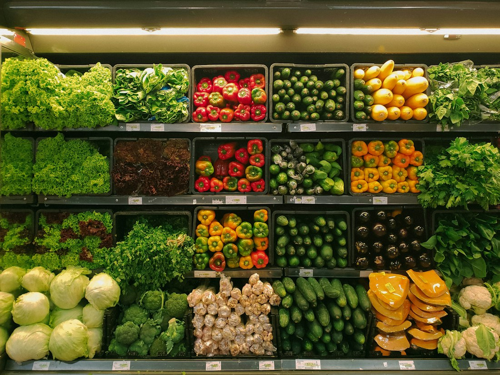
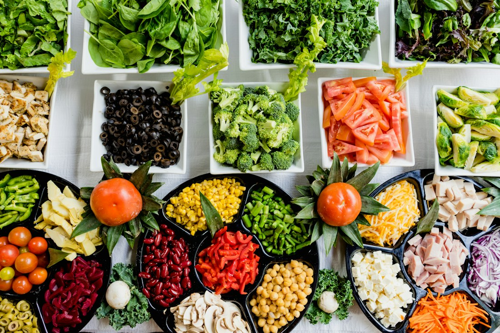
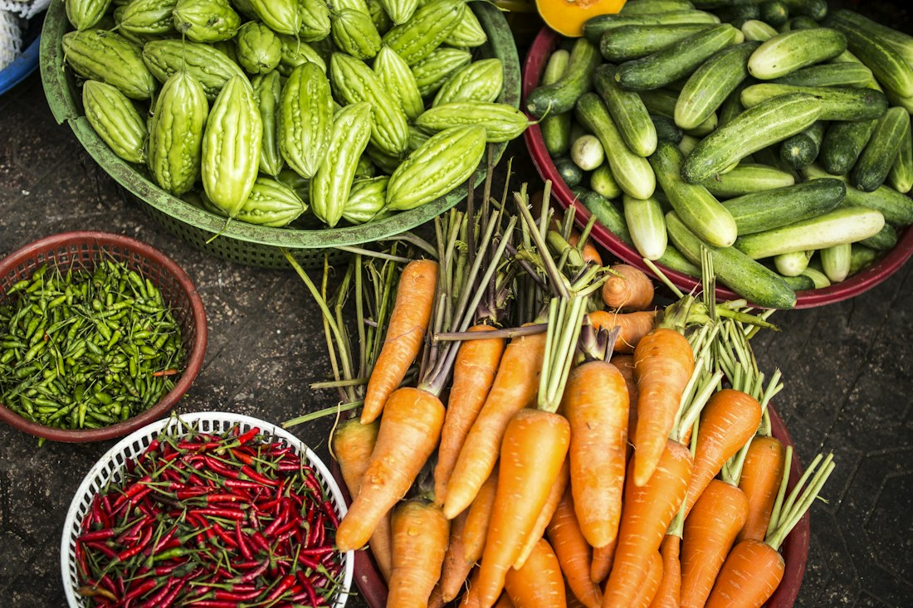

Clarity before clutter
Give each detail a purpose. Help people understand a choice without making them work through unnecessary noise.
We are shaping a food discovery experience around a simple idea:
choosing where to eat should feel like the start of something good.
“Where should we eat?”
It sounds simple, until everyone has a different budget, a different craving, and a different idea of a good evening. More options can make that decision harder.
Stackly is a concept for making those choices feel a little clearer. Not by choosing for you, but by making the useful details easier to find.
Our aim is to take a little friction out of finding food, so the attention can return to the conversation, the company, and the moment itself.
These principles guide the experience we want to build, from a small label to a whole page.
Give each detail a purpose. Help people understand a choice without making them work through unnecessary noise.
Leave room for a new flavour or an unfamiliar neighbourhood. Discovery should feel inviting, never like a race.
Distinguish a sample from a live service. Say what is available, what is illustrative, and what still needs to be built.
Budgets, tastes, and routines vary. Design around those differences rather than assuming one perfect way to eat.
A thoughtful food experience should remember the people, places, and work behind the plate.

Independent corners and familiar streets give a place its personality. Our discovery concept makes space for that sense of place.

A useful description does more than sound delicious. It gives someone a clearer idea of what they are exploring.
Behind any welcoming experience are people paying attention. We want the design to reflect that same consideration.
Photos express our design perspective; they do not depict verified partners or members of the Stackly team.
Our proposed design approach starts with the decision someone is trying to make, then works backwards to the information that would help.
A quick solo lunch and a family celebration ask for different kinds of information.
Use a consistent place for practical details, so people can compare options with less effort.
Use clear labels and deliberate interactions. A button should do what its wording promises.
Growth means little if useful details lose their meaning. Our ambition is an experience that stays grounded in the places it introduces and the people using it.
That means treating accuracy, accessibility, and thoughtful presentation as ongoing work, rather than finishing touches.
An intention for the product we are developing, not a claim of existing partnerships.
A few honest answers about this website and the work ahead.
Stackly is a website concept in development. The pages demonstrate a food discovery experience; they are not connected to a live restaurant marketplace.
The concept prioritises practical information, calm layouts, and room for personal preferences. The goal is to make decisions feel more manageable, without overwhelming the person making them.
No. Photography is illustrative. We have not represented the people or businesses in these images as employees, partners, or verified listed venues.
A live service would need verified information, appropriate account and privacy controls, operational support, and tested booking or ordering systems. Those services are not available in this preview.
You can explore the layouts and use browser-local features such as search, filters, saved dishes, and a personal dining plan. These interactions help demonstrate the concept without creating real orders or reservations.
Take a look around the concept and discover which part speaks to your appetite.